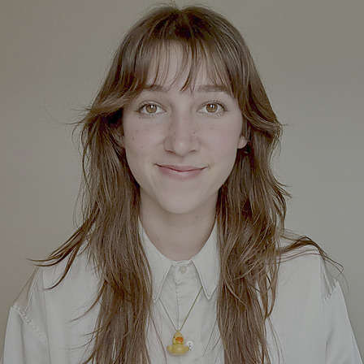

Julia Santaniello
Third-year Computer Science & HRI PhD candidate in the MuLIP Lab at Tufts University.
What I work on
My research sits at the intersection of machine learning, robotics, and cognitive science. At Tufts, I study how passive brain signals can support implicit human-in-the-loop reinforcement learning.
Advised by Dr. Jivko Sinapov and Dr. Robert Jacob, I develop RL frameworks that align agent behavior with user goals and expectations through brain-computer interfaces (BCI).
Recent projects
-

Offline NEURO-LOOP
Brain signals for human-in-the-loop RL from an offline dataset.
-

Mapping fNIRS to Agent Performance
Towards reinforcement learning from neural feedback.
-

SpheroHunter
Tracking under occlusion in maze environments.